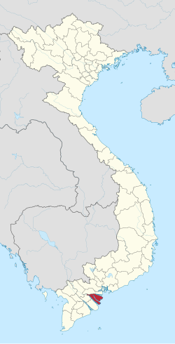

Bến Tre là một tỉnh thuộc vùng Đồng bằng sông Cửu Long, nằm ở cuối nguồn sông Mekong trước khi đổ ra biển Đông. Tỉnh được bao bọc bởi ba nhánh sông lớn của sông Tiền là sông Tiền, sông Ba Lai và sông Hàm Luông, tạo thành ba dải cù lao lớn. Nhờ vị trí đặc biệt này, Bến Tre có hệ thống kênh rạch chằng chịt và đất đai màu mỡ, rất thuận lợi cho phát triển nông nghiệp và nuôi trồng thủy sản. Bến Tre nằm cách Thành phố Hồ Chí Minh khoảng 85 km về phía Nam, phía Bắc giáp tỉnh Tiền Giang, phía Tây và Nam giáp tỉnh Trà Vinh, phía Đông giáp biển Đông với đường bờ biển dài hơn 60 km. Vị trí địa lý này không chỉ giúp Bến Tre phát triển kinh tế nông nghiệp mà còn tạo điều kiện thuận lợi cho giao thương, du lịch sinh thái và kinh tế biển. Với địa hình chủ yếu là đồng bằng thấp, sông ngòi dày đặc và khí hậu nhiệt đới gió mùa ôn hòa, Bến Tre mang đặc trưng tiêu biểu của vùng sông nước miền Tây Nam Bộ.

Con người Bến Tre mang đậm nét chân chất, hiền hòa và mến khách của vùng quê sông nước miền Tây. Sinh ra và lớn lên giữa những vườn dừa xanh mát và hệ thống sông rạch chằng chịt, người dân nơi đây gắn bó mật thiết với thiên nhiên, cần cù trong lao động và giàu tình nghĩa xóm làng. Họ sống giản dị, thật thà, luôn sẵn sàng giúp đỡ nhau trong cuộc sống thường ngày. Người Bến Tre còn nổi tiếng với tinh thần yêu nước và truyền thống cách mạng kiên cường. Mảnh đất này là quê hương của nữ tướng anh hùng Nguyễn Thị Định, người có nhiều đóng góp trong phong trào Đồng Khởi, thể hiện ý chí mạnh mẽ và lòng dũng cảm của con người nơi đây. Chính truyền thống ấy đã hun đúc nên một thế hệ người dân năng động, sáng tạo nhưng vẫn giữ gìn giá trị văn hóa truyền thống. Bên cạnh đó, đời sống tinh thần của người dân Bến Tre cũng rất phong phú với các hoạt động văn nghệ, đờn ca tài tử và những buổi sinh hoạt cộng đồng đậm chất Nam Bộ. Tất cả những điều đó đã tạo nên hình ảnh con người Bến Tre hiền hậu, nghĩa tình và đầy bản sắc – góp phần làm nên vẻ đẹp riêng của “xứ dừa” trong lòng mỗi người khi nhắc đến.
Tết Bến Tre nổi bật với bánh tét nước cốt dừa, mứt dừa truyền thống, không khí ấm áp và sum vầy.